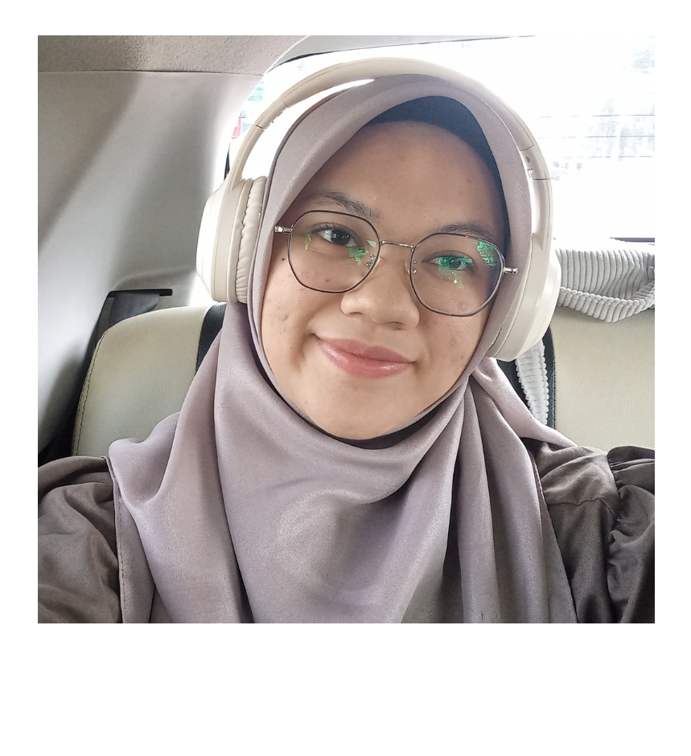
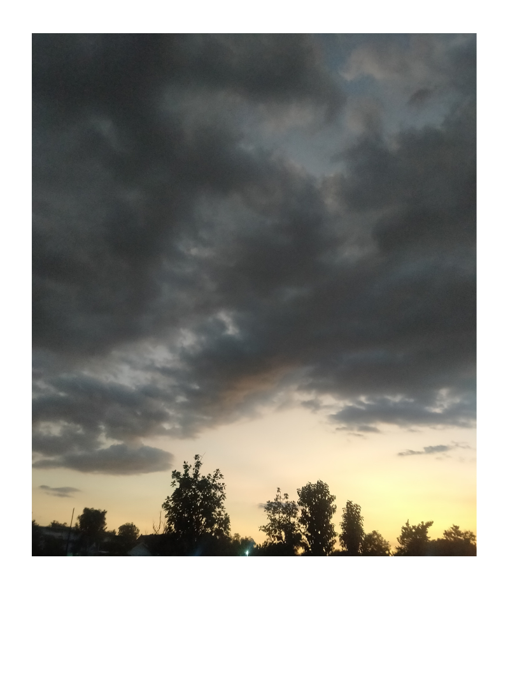

BiodataKu
Let's Get To Know Me
NPM
140810230076
Nama
Maritza Ratnamaya Nugroho
Alamat
Klaten, Jawa Tengah
Hobi
Mendengarkan musik
Mencoba hal baru
Memfoto langit
 
For More
maritzaa.ry
maritza23003@mail.unpad.ac.id
mrs. zhou